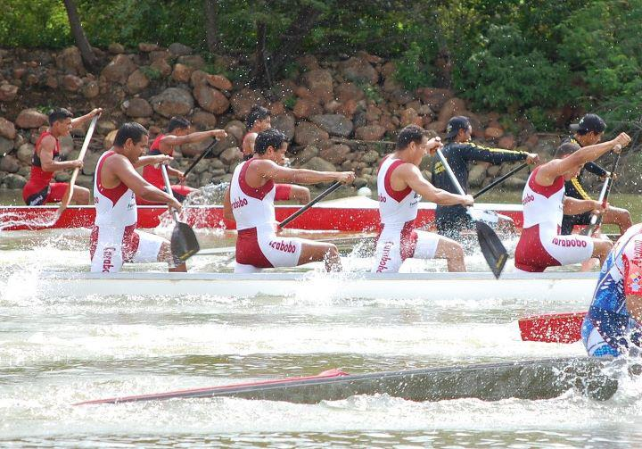

La presea de plata la alcanzó el equipo de K4 masculino sobre 500 metros conformado por Frankely Camilo, Elias Meertens, Ricardo Manzano y Daniel Contreras, con tiempo de 1.38.76. El oro se lo acreditó la representación de Cuba, Roberto Benítez y Yan Samé, con 1.38.03, mientras que la de bronce fue para la pareja de México, Alberto Briones y Jorge Eguias. En la modalidad de canoa individual masculino de 1.000 m la medalla de bronce la logró el zuliano Edward Paredes con tiempo de 4 minutos, 1 segundo y 16 centésimas. La de oro se la acreditó el cubano José Pelier con tiempo de 3.55.01, y la de plata el colombiano Sergio Díaz con 3.58.86. En el kayak dobles femenino, 500 m el combinado venezolano llegó en la cuarta posición con tiempo de 2.06.25; la presea de oro Cuba con 1.51.08; plata México con 1.54.28, y bronce Colombia con 2.01.80. Otro venezolano que compitió en la jornada fue Rafael Cardozo quien llegó de quinto en el kayak individual 500 metros.
